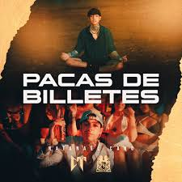
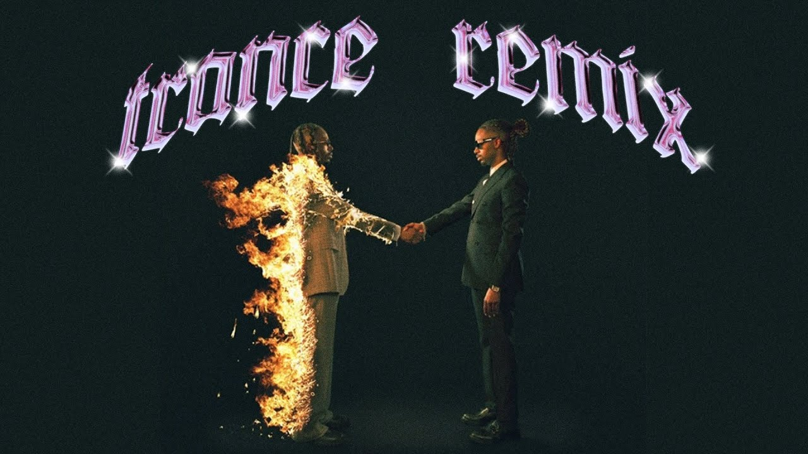

Pacas de Billetes 
Letras Pacas de billetes y una mente que las puede Desde plebes sabíamos que íbamos pa este level Me cambió la vida, nos cambió ya el modo Nunca para abajo, siempre para arriba No me hizo menos ni un cabrón, nunca pudieron Carrito del año y hasta gente que me cuida Un Bugatti Chiron me lo compro, Dios me guía Ya no me detienen, bola de hocicones Ya traigo con qué, por si quieren quererme Y no andamos jugando y hágale si quiere Siempre me miré tranquilo Y al negocio siempre le metí los kilos Ando trabajando, me abrí los caminos Unos dicen que, yo, ya no soy el mismo Me aferré a la vida buena Con clase y estilo todo estaba afuera Hoy me bajo verga, a subir la escalera No van a poder tumbarme aunque quisieran ¡Eah! Y bien jalados Y arriba la bandera, viejo 701, la clave que se respeta La mente brillante y el negocio la receta Traigo medicina pa curar enfermos Música en la casa, tengo en la cocina Alterando el sistema, así es como se mueve Rolando por playas, por las nubes mis placeres Un Jetski en Miami, por el mundo y las mujeres Traigan a la cuenta Una botellita, destapo champaña, coroné la vuelta Y una de nueve tiros, cargo una Beretta Siempre me miré tranquilo Y al negocio siempre le metí los kilos Ando trabajando, me abrí los caminos Unos dicen que yo ya no soy el mismo Me aferré a la vida buena Con clase y estilo todo estaba afuera Hoy me bajo verga, a subir la escalera No van a poder tumbarme aunque quisieranJUST WANA ROCK
trance 
Did you forget? Do it for life Chicago that time All bull-- aside Wonderful vibe Wonderful night Did it with Trav All the kids, you and I Off in this club Bumpin and grindin Who made it flood You see the signs (signs) We pulled out the feathers for this type of weather She pulled to club, to buss up a dub She came with her man, I called in a sub She givin' out hugs, we know 'bout them hugs She put in my hand, don't know what it was She know some of the fam, but don't know enough My trust is In God We Trust Sippin' on wok, don't do tuss She got her own fans, she need her a bus Might give her a chance, it's givin' her Out in a trance it's givin' her Not on them Xans is givin her -- with bands is givin her A -- with plans is givin her Still in the gym, ain't did the implants I like that for real, ain't givin up Like they know that you real, they give it up Like if you got the steel, they give it up Takin these M's they givin us Then run in the field like it's ten of us I'm cleanin -- out like an enema I make that -- look like a cinema Take off the top, baby let's ride I'm with my dogs, I picked a side She want the boss, the one own the tribe (I own the tribe yeah) Arm out the window just throw it when we ride I bent the corner scraped the wheels and the tires Put twenty hoes on a boat til they tired Everybody on You now you need me my --, just keep the -- real Don't you crab with your song Who else -- up the city like us? When it rains, it's a thunderstorm I party at Shabba, in New York and LA Where they keep on going till the dawn (shabba) $200k what I'm on She licking all down my chest I told her I aint slime bae call me sex It ain't no dope where I put these racks at If you my hoe I call you sexy Got LA -- so bad it's dangerous I backed out of the knot, she tried to tangle up She got Paris manners and they so dangerous I'm in a trance, its givin her I'm in a trance, its givin her I'm in a trance, its givin her I'm in a trance, its givin her I'm in a trance, its givin her I'm in a trance, its givin her I'm in a trance, its givin her I'm in a trance, its givin her I move so far in time I move so far in time I've been... I've been whipped up in whip With my fist up in drive I've been --ed up in time I've been --ed up in night I've been working in time I've been... inside I've been inside I've been just like It's this life It's this life It's this life